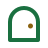
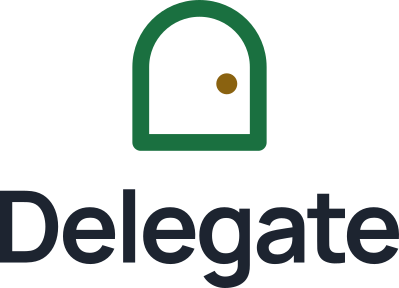

Uma porta para a Câmara. A chave fica consigo.
Logótipo, cores e tipografia do Delegate para o Telegram, o Observatório, a Consola Municipal e os documentos. Ficheiros em design-system/; regras completas no README.
A porta e a maçaneta.
O arco verde é a porta para os serviços municipais. O ponto dourado, junto ao lado direito, é a maçaneta: a porta está ao alcance da mão, e o Henriques só a abre com o mandato da pessoa.
Versão principal · fundo Bastidores · porta verde #7BCC90 e maçaneta dourada #E0B65D
- Grelha
- 48 × 48 unidades; o símbolo ocupa 32 × 36, centrado (caixa a tracejado).
- Porta
- Arco de raio 14 com centro em (24, 22), pernas até y 40, traço 4 com juntas redondas.
- Maçaneta
- Círculo de raio 2,5 em (30,5; 26): a 2,5 unidades da face interior direita e um pouco abaixo do meio do vão, como numa porta real.
- Proporções
- Traço ≈ 12 % da largura, medido na imagem de referência. A maçaneta é menor que o ponto original (raio 3,5) para não se ler como um olho.
- Proteção
- À volta do logótipo, no mínimo a largura do vão (24 unidades).
Um símbolo, sete usos.
Todos em SVG, com a palavra convertida em contornos: não dependem da fonte instalada. A versão escura sobre fundo escuro, a clara sobre fundo claro, nunca o inverso.






Ícone e favicon
Ícone para o avatar do bot (cabe no recorte circular). Favicon com traço mais grosso, segue o tema do sistema.
delegate-icone-app.svg · favicon.svg

Calma no ambiente. Cor com significado.
Uma base neutra e institucional. Verde, dourado e terracota indicam estados, nunca decoram. No código, usar os papéis semânticos de tokens.css.
#7BCC90 · --dlg-marca-verde#E0B65D · --dlg-marca-dourado#0F1B2D · --dlg-bastidores#F4EFE6 · --dlg-palco#FFFEFA · --dlg-branco#1D2430 · --dlg-tinta#647080 · --dlg-cinza#E6E2DA · --dlg-linha#C3CCD8 · --dlg-bastidores-texto#1A7040 · --dlg-verde#8A6210 · --dlg-dourado#B4492A · --dlg-terracota#167A76 · --dlg-cianoConcluído
A aguardar revisão
Atenção
Uma fonte em toda a experiência.
Manrope, local em fontes/ (variável, 200–800, licença OFL). A hierarquia faz-se com peso e tamanho, sem misturar outras famílias.
Títulos e frases de marca. Peso forte, tracking apertado.
Peso médio para mensagens e texto corrido; peso forte para hierarquia e ações.
O que mantém a marca inteira.
Contrastes calculados (WCAG 2.2) e os limites de uso estão no README.
Fazer
- Usar a versão escura sobre Bastidores e a clara sobre Palco ou Branco.
- Deixar à volta do logótipo pelo menos a largura do vão da porta.
- Abaixo de 24 px, usar o
favicon.svg. - Em alertas, texto em Tinta; a terracota fica no ícone e na borda.
Não fazer
- Mover a maçaneta para fora da porta ou para o lado esquerdo.
- Mudar cores fora das três variantes, aplicar gradiente, sombra ou contorno.
- Rodar, esticar ou recompor a palavra com outra fonte.
- Usar Cinza ou Ciano em texto pequeno sobre Palco (abaixo de 4,5:1).